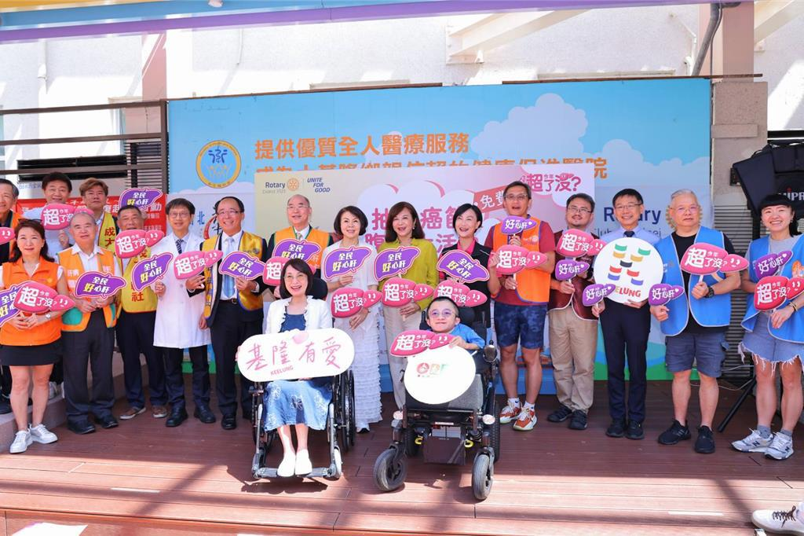

為使經濟生活狀況較困難的民眾也有機會做肝病及癌症篩檢，基隆市政府14日與肝病防治學術基金會合作辦理「免費抽血癌篩暨腹超健檢活動」，針對150位年滿30歲設籍基隆的身心障礙者及弱勢民眾，提供肝病與癌症等高風險疾病檢查。副市長邱佩琳到場感謝所有協助的團隊與志工，強調市府將持續推動醫療平權，讓每位市民都能獲得健康保障。
邱佩琳表示，守護市民健康是市府一以貫之的責任，尤其弱勢族群更需要社會共同支持。她感謝肝病防治學術基金會的熱心投入，讓這場活動不僅是一次健檢，更是一份安心與保障。市府會持續努力，打造一座充滿愛與關懷的城市，讓每個市民都能在健康的基礎上邁向幸福生活。
基市社會處長楊玉欣表示，許多身心障礙者因健康或經濟限制，往往難以定期健檢，容易錯失早期治療的機會。此次活動除提供免費檢查外，也安排專業醫護進行健康諮詢，並透過社會團體與志工的支持，將公益轉化為實際行動，讓健康照護成為一場全民參與的社會運動。
衛福部基隆醫院院長林三齊表示，未來將持續與市府合作，擴大推動多元健康促進計畫，確保市民享有平等的健康權益，攜手讓基隆成為有愛、健康有保障的友善城市。
據衛福部統計，肝癌長年位居國人十大癌症死因第2位，其威脅不容忽視。本次健檢特別針對身心障礙及經濟弱勢者量身規劃，內容包括B、C型肝炎篩檢、肝功能與腫瘤標記檢查、腹部超音波與血液分析，並提供完整檢查報告，若發現異常，醫療團隊也將即時轉介，落實健康管理。
市府強調，活動現場不僅有醫護人員提供專業服務，扶輪社志工更全程協助弱勢朋友完成檢查流程，展現社會各界對弱勢族群的支持與溫暖，不僅守護了健康，也凝聚了城市向心力，象徵基隆邁向「健康共好、幸福永續」的願景。
感謝!
